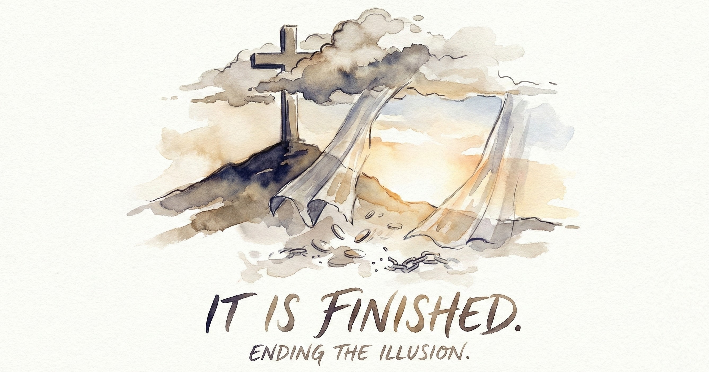
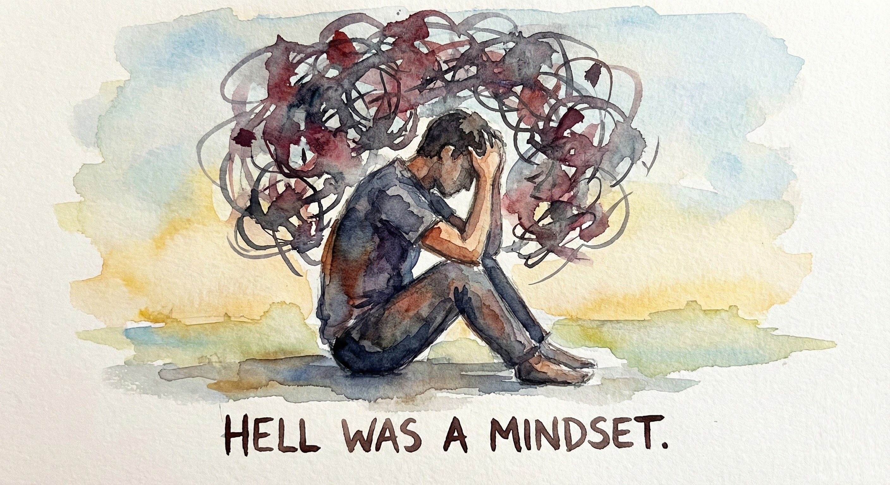
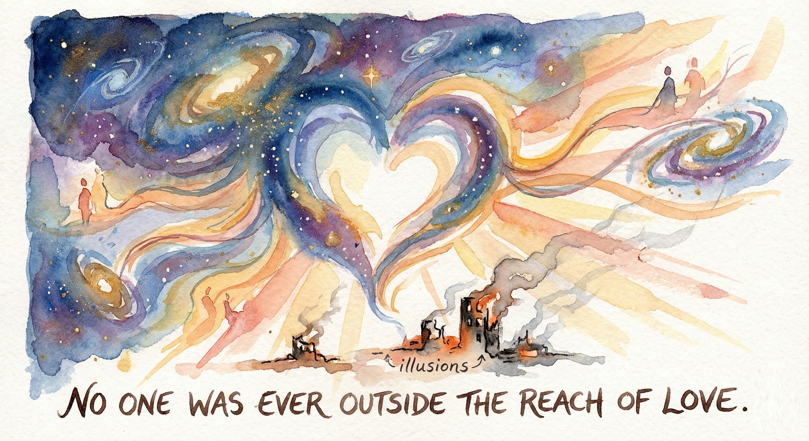

It takes a long time to unlearn fear.
It clings to the corners of the soul like smoke after a fire.
Even when the flames are gone, the smell remains.
But something stronger is rising now.
A different kind of fire.
Not the fire of punishment, but the fire of awakening.
The fire of love that burns clean.
For centuries, religion taught us to tremble before God.
To treat Him as an unpredictable monarch, easily offended and impossible to please.
We built entire systems around managing His moods, trying to stay on His good side.
We forgot that Jesus came to show us the good side had no bad side at all.
He walked through villages, touching the untouchable, forgiving without permission, healing without prerequisites.
He didn't act like a servant of wrath.
He acted like a Son of love, revealing a Father who has no interest in vengeance, only reunion.
And the world didn't know what to do with that.
So it crucified Him.
Love stood there, bleeding between two thieves, while the old religion mocked, "If You are the Son of God, come down."
But Love doesn't come down.
Love stays.
Love endures every accusation, absorbs every sin, and turns the weapon of fear into a bridge of forgiveness.
When He said, "It is finished," He wasn't closing a deal.
He was ending an illusion.
The illusion that God needs payment.
The illusion that love must be earned.
The illusion that fear keeps us safe.
And still, somehow, humanity crawled back to its comfort zone.
We rebuilt the old system with new vocabulary.
We replaced sacrifices with sacraments, altars with pulpits, smoke with theology.
But underneath it all, the same whisper lingered: Be afraid.
Afraid of missing the rapture.
Afraid of divine rejection.
Afraid of what happens when you stop pretending.
Now the whisper is breaking.
Because love has found its voice again.
It sounds like the father running down the road to embrace his filthy, bewildered son.
It sounds like the shepherd leaving ninety-nine sheep to find the one.
It sounds like Jesus at the cross, praying for the people who still think He deserves it.
It sounds like grace.
And once you hear it, you can never unhear it.
You begin to recognize how much of what passed for faith was really fear in a choir robe.
You start noticing how much of your obedience was bargaining.
And then, quietly, something shifts.
You stop negotiating and start trusting.
You stop groveling and start resting.
You stop trying to deserve love and start daring to believe it has been chasing you all along.
That is the moment the cage opens.
That is the sound of hell collapsing.
Because hell was never a place.
It was a mindset.
A wound in the human imagination, convincing us that separation was real.
But Jesus stepped into that wound and filled it with Himself.
He took the darkest lie humanity ever believed—that we could fall out of love's reach—and He buried it in an empty tomb.
That is the gospel.
Not threat, not transaction, not test.
Just truth.
Love never fails.
So what happens now?
You live.
Not as a project or a pawn, but as a child who finally believes the Father's eyes hold no shadows.
You begin to see others through that same light.
You stop labeling people as saved or unsaved, worthy or unworthy, clean or unclean.
Because once love wins in you, it refuses to lose anywhere else.
Love always expands.
It moves from you to the person you judged, to the stranger you avoided, to the enemy you feared.
And suddenly you understand why Jesus called His kingdom a seed.
It grows quietly, steadily, beneath the surface of everything.
One day, when this story is finished, and all the illusions have burned away, the universe will echo with a single truth:
No one was ever outside the reach of love.
Every tear will be wiped away, not by decree, but by recognition.
Every scar will become a story of grace.
Every lost heart will finally realize it was never truly lost.
Love wins. Always.
Not because we deserve it, but because it cannot do anything else.
It is who God is.
It is what remains when every falsehood falls away.
It is the last word spoken over creation, and the first word that ever was.
So take a deep breath.
Lay down the fear that never saved you.
Step into the quiet that doesn't accuse.
You are home.
And the fire that once terrified you,
is only the light of a Love that will never, ever let you go.